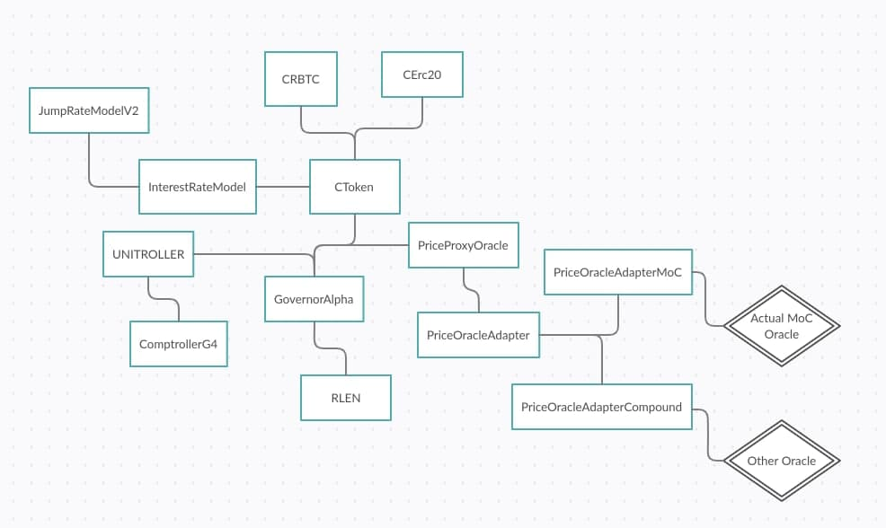

A Price Oracle maintains the current exchange rate of each supported asset. These values are used to determine borrowing capacity, collateral requirements and for all functions which require calculating the value equivalent of an account.
Although interest rates are determined by the balance between supply and demand, rLending relies partially on market prices. Since the protocol has the ability of listing dozens of markets, each requiring it's own Oracle with it's own set of rules, we created a customizable Oracle subsystem as part of the rLending Protocol.
rLending's Oracle subsystem is comprised by a set of smart contracts.
The main smart contract is the PriceOracleProxy. This contract acts as the single point of price consultation for the entire platform.
Since there is no standard on how Oracles report their values and each market listed in the protocol requires an independant interaction with an oracle that provides its current exchange rate, we included an "Adapter" layer that acts as a middle-man between the PriceProxyOracle and the actual Oracle Contracts providing rates for each market.
In order to preserve decentralization, rLending does not manage any of the oracles the protocol is currently using. We will talk in detail about this in the next section Security and Audits.
Here is a diagram on the current state of the Oracle subsystem:

Introduction Key Concepts How To Financial Aspects and Math Contracts Oracles Security and Audits